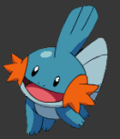

|
|
|
Pokémon Ruby &
Sapphire
Pokémon Ruby (Red) and Sapphire
(Blue), which was known as Pokémon Advanced for a while, will prove to be a new, exciting
adventure in the Pokémon RPG series. There are going to be 100 more Pokémon joining
all the other 251 Pokemon to make the land filled with 351 for you to capture. A big
improvement over Red and Blue with only 151! There is going to be a new world to explore
with new trainers, gym leaders, professors, and heros. Of course with 100 new Pokemon your
gonna need a better Pokedex to catalog them all in, and thats what you get.
Because
the game is for Gameboy Advance only Nintendo can really use the abilities it has, like
shadows, footprints in the sand, ripples in water, and more like mist or fog. One of the biggest changes that will
have an effect on how you play is that you can have two-on-two matches, meaning both
trainers can have 2 Pokemon out at a time. Think of how effecient you could be with one
Pokémon using Sunny day and another following with Flamethrower!
ANd of course with new
games and Pokemon come new abilities, HMs, and TMs.
Overall I think Pokemon Ruby and Sapphire will be a lot different from the other games,
and I am getting it right when it comes out!
|
|
|
|